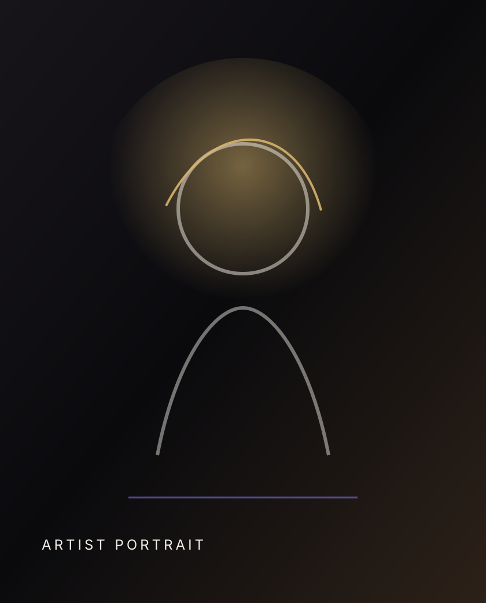

About the Artist
A practice rooted in encoded sensation, speculative ecology, and luminous restraint.
Biography
Astra Vale is a contemporary NFT artist working across generative systems, animation, and immersive digital installation. Their practice examines the relationship between technological memory and organic form, creating works that feel both archival and alive.
Presented through curated drops and gallery installations, Vale's editions are collected internationally by digital art patrons, cultural institutions, and private collectors interested in the evolving language of blockchain-native art.

Artist Statement
I use code as a form of choreography. Each work begins as a rule, a pulse, or a constraint, then opens into a field of gestures that feel almost biological. The blockchain is not only a distribution system; it is a site where permanence and volatility meet.
My work asks how images can carry intimacy in a networked era, and how digital objects can become vessels for ritual, care, and long-term attention.